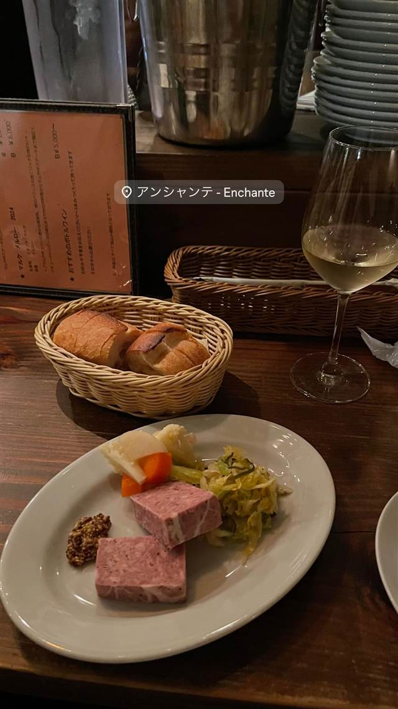

アンシャンテ（Enchante）
自家製パテが自慢、2026年5月末に閉店するワインビストロ
アンシャンテ - Enchante
神泉の路地裏にある12席ほどの小さなワイン＆ビストロ。2014年の開業以来12年にわたり親しまれてきたが、2026年5月末での閉店を発表している。
TRIVIA
豆知識
- 2014年の開業から12年、2026年5月末での閉店を発表している
REVIEWS
世間の評判
3.20食べログ
前菜盛り合わせと肉料理の完成度
- 前菜盛り合わせやリブロースステーキ、鴨のローストが好評だという声が多い
- カウンター席のみの落ち着いた隠れ家的な空間で寛げるという声が多い
- マスターは無理に高いワインを勧めず好みに合わせて選んでくれると評判が良い
食べログ 口コミ35件
| 創業 | 2014年6月開業 |
|---|---|
| 看板 | 前菜盛り合わせ、自家製パテ |
| こだわり | ソムリエの店主がワインと料理のペアリングにこだわる |
| どこから | 都心 |
| 予算 | 夜 ¥6,000～ |
| 定休日 | 日曜日 |
| 場所 | 神泉（徒歩2分） 東京都渋谷区円山町 |
| メモ | 神泉駅徒歩2分、カウンター中心12席。2026年5月30日をもって閉店予定 |
食べたもの：パンとパテ、ワイン
NEARBY
近い店・同じ系統の店
-
 パスタ 渋谷
KURA 渋谷店
元プロゴルファーら異業種出身者が始めた、もちもち生パスタ50種以上
昼 ¥1,000～¥1,999 夜 ¥2,000～¥2,999
パスタ 渋谷
KURA 渋谷店
元プロゴルファーら異業種出身者が始めた、もちもち生パスタ50種以上
昼 ¥1,000～¥1,999 夜 ¥2,000～¥2,999
-
 ベトナム 渋谷駅
ミス・サイゴン（MISS SAIGON）
ベトナム人スタッフが作る野菜たっぷりのフォーとバインセオ
夜 ～¥5,999
ベトナム 渋谷駅
ミス・サイゴン（MISS SAIGON）
ベトナム人スタッフが作る野菜たっぷりのフォーとバインセオ
夜 ～¥5,999
-
 台湾 恵比寿
七一飯店
週1回だけの営業だった名残の店名、看板は魯肉飯
昼 ¥1,000～¥1,999 夜 ¥1,000～¥1,999
台湾 恵比寿
七一飯店
週1回だけの営業だった名残の店名、看板は魯肉飯
昼 ¥1,000～¥1,999 夜 ¥1,000～¥1,999
-
 コーヒー 渋谷
Café Kitsuné Shibuya
パリ発ブランドのカフェ、狐にちなむ名を持つバゲットサンド
昼 ¥1,000～¥1,999 夜 ¥1,000～¥1,999
コーヒー 渋谷
Café Kitsuné Shibuya
パリ発ブランドのカフェ、狐にちなむ名を持つバゲットサンド
昼 ¥1,000～¥1,999 夜 ¥1,000～¥1,999
-
 コーヒー 渋谷駅
Roasted COFFEE LABORATORY 渋谷神南店
店内焙煎の豆で淹れる「MADE IN SHIBUYA」のコーヒー
昼 ¥1,000～¥1,999 夜 ¥1,000～¥1,999
コーヒー 渋谷駅
Roasted COFFEE LABORATORY 渋谷神南店
店内焙煎の豆で淹れる「MADE IN SHIBUYA」のコーヒー
昼 ¥1,000～¥1,999 夜 ¥1,000～¥1,999
-
 カフェ 渋谷
JINNAN CAFE 渋谷店
ドラマや映画のロケ地に頻繁に使われるとろけるスフレパンケーキ
昼 ¥1,000～¥1,999 夜 ¥1,000～¥1,999
カフェ 渋谷
JINNAN CAFE 渋谷店
ドラマや映画のロケ地に頻繁に使われるとろけるスフレパンケーキ
昼 ¥1,000～¥1,999 夜 ¥1,000～¥1,999